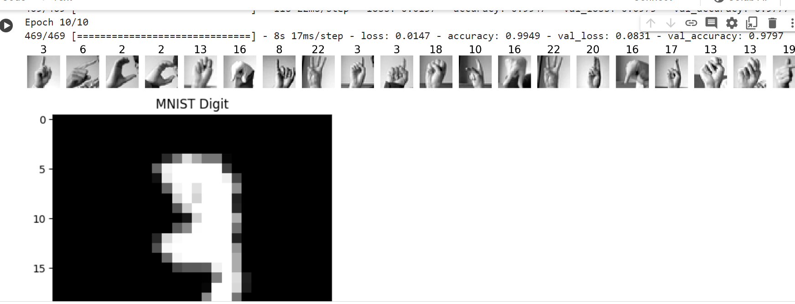

Here you can find my portfolio and some of my work samples!
1. Database Project: Creating a database for Ajjerni involved employing SQL to design and build a structured repository for managing information crucial to the organization. Using SQL, I crafted tables, defined relationships, and established the framework that stores and organizes Ajjerni's data efficiently. This database encompasses various entities like customers, products, orders, and more, ensuring seamless access, retrieval, and manipulation of information critical to Ajjerni's operations. Leveraging SQL's capabilities, I implemented queries and constraints to maintain data integrity and enable sophisticated data retrieval, serving as a robust backbone for Ajjerni's day-to-day functions and strategic decision-making processes
2. Developing a neural network model for image recognition and classification: this project marked an exciting milestone in leveraging advanced technology for precise visual analysis. This model was meticulously crafted to understand intricate patterns within images, enabling accurate identification and categorization of various visual elements. Through layers of interconnected neurons, the neural network was trained on diverse datasets, learning to differentiate between distinct objects, shapes, and features within images. This innovative approach holds promise in applications ranging from object detection in autonomous vehicles to medical image analysis, showcasing the power of neural networks in decoding visual data for enhanced decision-making.

3. Volunteered with Medlife to recycle plastic and other materials: Collaborating with a passionate team, I actively engaged in collecting, sorting, and processing plastics and other materials, ensuring their proper recycling and diversion from landfills. Through this experience, I contributed to Medlife's impactful efforts aimed at reducing environmental impact and promoting a more sustainable future. It was gratifying to play a role in this endeavor, witnessing firsthand the positive change achieved through collective action in preserving our planet.